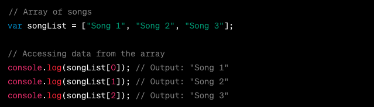
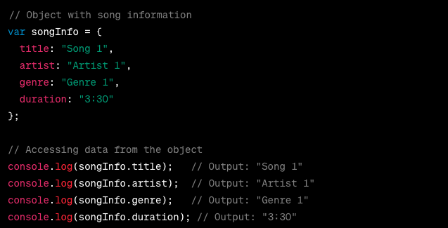

An analogy to describe JavaScript and its relationship to HTML and CSS.
If we consider HTML as the club that sets the stage and CSS as the band that brings the energy, then JavaScript is indeed the music that creates the vibe. JavaScript adds interactivity and dynamic elements to the web experience. Just like music sets the mood in a club, JavaScript brings life to web pages, enabling functionality animations, user interactions, and much more. It adds that extra layer of excitement and engagement, making the web experience truly immersive and enjoyable. So, HTML, CSS, and JavaScript together form a powerful trio, creating a captivating and interactive digital environment.
Explain control flow and loops using an example process from everyday life, for example, 'waking up' or 'brushing your teeth' (but not those).
When you embark on the journey of composing a song, control flow becomes your guiding companion, leading you from gathering your materials to sharing your final creation. You start by checking that you have all the essentials in place. Then, you dive into creating an enchanting melody and weaving in the chords and harmonies. Sometimes, you need to loop back and fine tune things. You might experiment with different melodies, adjusting chords and harmonies until you find the perfect combination that hits the right emotional notes. Similarly, crafting meaningful lyrics can be a process where you continuously refine and polish your words to match the melody and theme. As you progress, you arrange the song, figuring out the best structure and flow.
Describe what the DOM is and an example of how you might interact with it.
The DOM stands for Document Object Model, and sits in the magic place between the past (original HTML file), and the future (the final interactive website). The DOM can be seen as a magical intermediary between the past and the future of a web page. When a browser loads an original HTML file, the DOM is created as a representation of that document. It organizes the HTML elements into a structured way, allowing JavaScript to interact with and manipulate the elements dynamically. Through JavaScript, we can modify the DOM, adding, removing, or modifying elements, styles, and content, effectively shaping the future interactive website. The DOM bridges the gap between the static HTML file and the dynamic, interactive web experience.
Explain the difference between accessing data from arrays and objects.

In the code above, the array songList stores a collection of songs. To access the data, we use the index value associated with each song (songList[0] for the first song, songList[1] for the second song, and so on).

In the code above, the object songInfo stores information about a song. To access the data, we use the key associated with each property of the song (songInfo.title to access the title, songInfo.artist to access the artist, and so on).
So, in the array example, we access the data using indices (songList[0]), whereas in the object example, we access the data using keys (songInfo.title).
Explain what functions are and why they are helpful.
Functions in programming are reusable blocks of code that perform specific tasks. They are helpful because they:
Enable code reusability: You can define a function to play a song, and then use it to play different songs throughout your program.
Promote modularity: Functions allow you to break down complex tasks into smaller, manageable parts. For example, you can have separate functions for playing, pausing, and stopping a song.
Provide abstraction: When using a function, you don't need to know how it works internally. Just like you don't need to know how a music player works to play a song.
Improve code readability: Functions with clear names and purposes make code easier to understand. For instance, a function named "calculateDuration" makes it obvious what it does.
code and data: Functions can accept inputs (e.g., song name) and produce outputs (e.g., playing the song). This encapsulation makes code more organized and easier to maintain.
Enhance code organization: Grouping related operations in functions helps you locate and modify specific functionality easily. For instance, you can have a function to search for songs and another to add songs to a playlist.